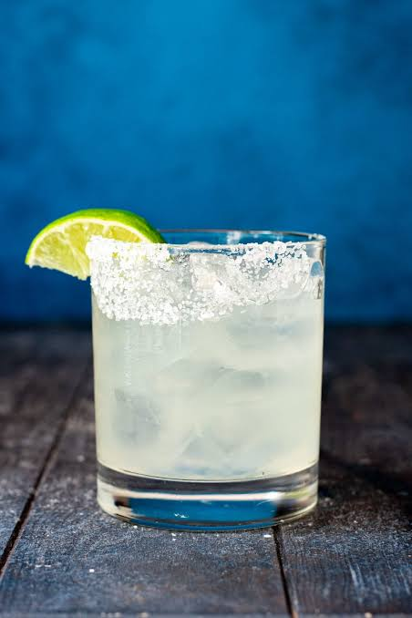

Margarita Recipe

Description
A margarita is a tangy cocktail made with tequila, lime juice,
and orange liqueur, often served with a salted rim. It's bright,
citrusy, and perfect for summer.
Ingredients
- 2 oz tequila
- 1 oz fresh lime juice
- 1 oz orange liqueur (Triple Sec or Cointreau)
- Salt for the rim (optional)
- Ice
Steps
- Rub a lime wedge around the rim of a glass and dip in salt.
- Combine tequila, lime juice, and orange liqueur in a shaker with ice.
- Shake well until chilled.
- Strain into the prepared glass over fresh ice.
- Garnish with a lime wheel and serve.
Home